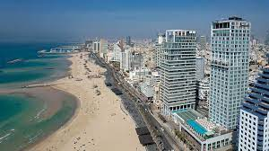

העיר - תל אביב
הסבר על העיר תל אביב
תל אביב, העיר הכוללת את רוחה המודרנית של ישראל, מהווה מרכז תרבותי, כלכלי ובידורי מרהיב. העיר ממוקמת בחוף התיכון של הים התיכון, והיא ידועה באופי הדינמי והקוסמי שלה. תל אביב היא אחת ממרכזי הפעילות התרבותית במזרח התיכון, כשבכל רחבי העיר ניתן למצוא גלריות אמנות, מוזיאונים, מוסדות תיאטרון, ומסעדות עולמיות.
העיר מציעה חופים יפים ופארקים ירוקים, יחד עם רחובות מסחר ושכונות ייחודיות המשלבות את התרבות העממית והמודרנית במגוון צבעים. תל אביב היא גם ביתה של חיי הלילה ותרבות הבילוי, עם מגוון רחב של ברים, קפטריות, ומועדונים.
עם תחושתה החמה והמסובכת, תל אביב מצטיינת בגאווה עם אנרגיה יוצאת דופן ואהבה לחיים, והיא ממשיכה לשמש מקום מקודש לתושביה ולמבקריה כאחת.
תיאור נוסף על תל אביב...